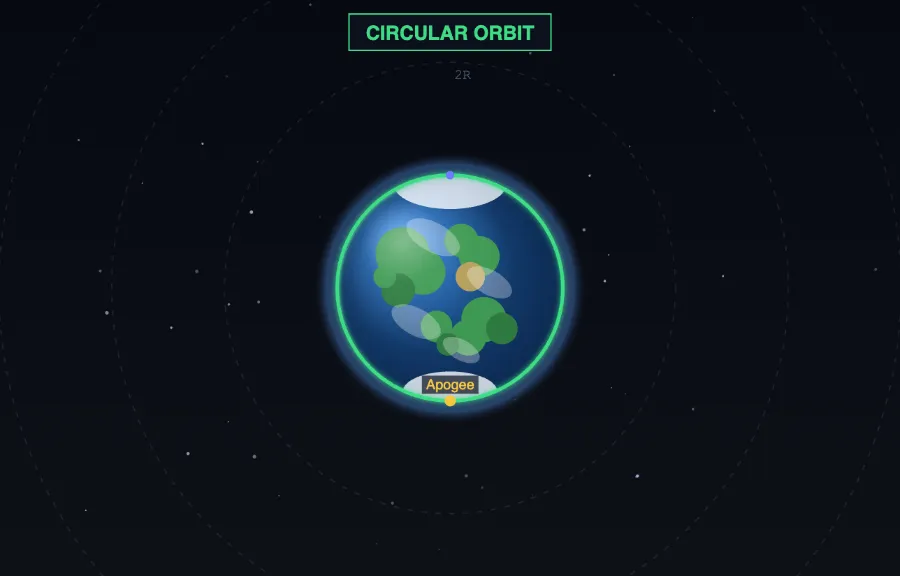
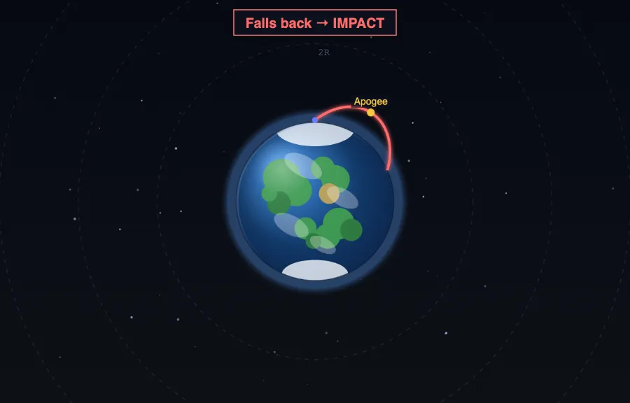
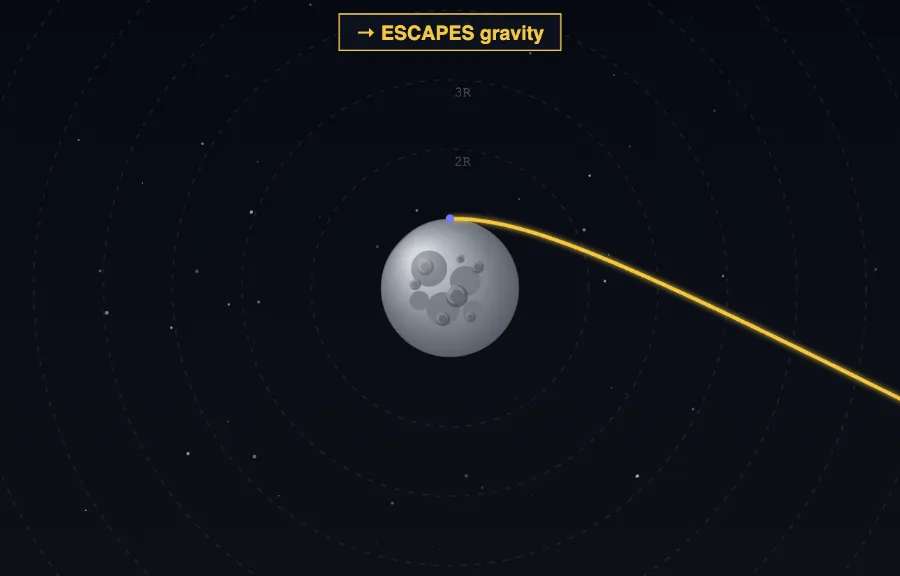

Understanding Escape Velocity — Free Interactive Simulator
Escape velocity is the minimum speed an object must reach to break free of a planet’s gravity with no further thrust. This free simulator is a working version of Newton’s cannonball: launch a rocket at any speed and angle under real inverse-square gravity, and watch it fall back, orbit, or escape. It computes escape velocity, circular orbital velocity, apogee, perigee, eccentricity and period from the standard equations for Earth, the Moon and Mars.

What is the escape velocity formula?
Escape velocity comes from energy conservation. To just barely escape, an object’s kinetic energy must equal the gravitational potential energy binding it: ½mv² = GMm/R. The mass m cancels, leaving vesc = √(2GM/R). Because the mass of the object cancels, a pebble and a spaceship need exactly the same speed to escape — 11.2 km/s from Earth’s surface.
Key Escape & Orbit Equations (Featured Snippet)
| Quantity | Formula (SI) | Symbol & Unit |
|---|---|---|
| Escape velocity | vₕₛₜ = √(2GM / R) | vₕₛₜ, m/s |
| Circular orbital velocity | v₋₋₋ = √(GM / R) | v₋₋₋, m/s |
| Escape ÷ circular ratio | vₕₛₜ / v₋₋₋ = √2 | ≈ 1.414 |
| Vis-viva (speed at radius r) | v² = GM(2/r − 1/a) | v, m/s |
| Specific orbital energy | ε = v²/2 − GM/r | ε, J/kg |
| Semi-major axis | a = −GM / (2ε) | a, m |
| Orbital period | T = 2π√(a³ / GM) | T, s |
| Gravitational PE | U = −GMm / r | U, J |
What is the difference between orbital velocity and escape velocity?
Circular orbital velocity vcirc = √(GM/R) is the speed needed to stay in a stable circular orbit, where gravity exactly supplies the centripetal force. Escape velocity vesc = √(2GM/R) is larger by a factor of exactly √2 (about 1.414). Fire horizontally below vcirc and the rocket falls back; fire between vcirc and vesc and it follows a stable ellipse; reach vesc and it never returns, tracing a parabola, then a hyperbola beyond that.
Why does escape velocity not depend on launch angle?
Escape velocity is an energy condition, not a direction condition. Since gravitational potential energy depends only on distance from the centre of mass, any object with enough kinetic energy will escape regardless of which way it points — straight up, sideways, or at 45°. The path differs, but the escape threshold is the same. In this simulator you can prove it: set the speed to escape velocity and change the angle; the rocket always leaves, only the shape of its outbound path changes.
Newton’s Cannonball — Orbiting Is Just Falling
Isaac Newton pictured a cannon on an impossibly tall mountain, above the atmosphere, firing horizontally. A slow ball arcs down and hits the ground a short way off. Fire faster and it lands farther, because the ground curves away beneath it. Fire fast enough — about 7.9 km/s — and the ground curves away exactly as fast as the ball falls, so it never lands: it is in orbit. Faster still and the orbit stretches into an ellipse; at 11.2 km/s it opens into an escape trajectory. Orbiting, Newton realised, is simply falling while moving sideways fast enough to keep missing the planet.


A Worked Example to Sanity-Check the Simulator
Compute Earth’s escape velocity from the surface. Use G = 6.674×10⁻¹¹ N·m²/kg², M = 5.972×10²⁴ kg, R = 6.371×10⁶ m.
| Quantity | Calculation | Result |
|---|---|---|
| Standard gravitational parameter GM | 6.674e−11 × 5.972e24 | 3.986×10¹⁴ m³/s² |
| 2GM/R | 2 × 3.986e14 / 6.371e6 | 1.2515×10⁸ m²/s² |
| Escape velocity vₕₛₜ | √(1.2515e8) | 11,187 m/s ≈ 11.19 km/s |
| Circular velocity v₋₋₋ | √(GM/R) = √(6.257e7) | 7,910 m/s ≈ 7.91 km/s |
| Check ratio | 11,187 / 7,910 | 1.414 = √2 ✓ |
These match the simulator’s Earth readouts exactly. That 11.2 km/s is about 33 times the speed of sound — which is why reaching orbit is a matter of speed, not altitude.
Three Things Students Get Wrong, Every Year
- Thinking escape velocity depends on the rocket’s mass. It does not — the mass cancels. Mass decides how much fuel you need to reach 11.2 km/s, not the speed itself.
- Confusing orbital and escape speed. Circular orbit needs √(GM/R); escape needs √(2GM/R). The escape speed is only √2 times bigger, not double.
- Assuming a single horizontal launch can reach a stable low orbit from the ground. Because the launch point lies on the trajectory, a surface launch below circular speed always returns to the surface. Real rockets fire a second burn at apogee to circularise — something a single impulse cannot do.
Where Escape Velocity Actually Lives in Engineering
- Launch vehicle design. The rocket equation Δv = ve ln(m₀/mf) sets how much propellant is needed to reach orbital and escape speeds — the reason rockets are almost entirely fuel.
- Satellite deployment. Mission planners target circular velocity for LEO, GEO transfer ellipses, and hyperbolic excess velocity for interplanetary escape.
- Atmospheric retention. A planet keeps a gas only if the gas molecules’ thermal speed stays well below escape velocity — why the Moon has no air and Jupiter keeps hydrogen.
- Re-entry & aerobraking. Spacecraft use atmospheric drag — modelled by the drag toggle here — to shed orbital energy without fuel.
How do I use this escape velocity simulator?
In Simulate mode, set speed, angle and altitude with the sliders, choose Earth, Moon or Mars, then press Launch. Read the outcome and orbital numbers, or open Show Calculations for the full derivation. Use Explore for concept cards, Practice for unlimited problems, and Quiz for a 5-question assessment.
Explore Related Simulators
If you found this Escape Velocity simulator helpful, explore our Projectile Motion simulator, Newton’s Laws simulator, and Simple Pendulum simulator.